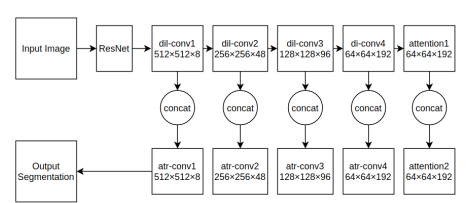

About
I received my Master’s in Robotics from the University of Maryland, College Park, and my Bachelor's in Mechanical Engineering from Vellore Institute of Technology.
I'm broadly interested in computer vision and machine learning.
My research involves visual reasoning, uncertainty quantification, and efficient deep neural network architectures.
Teaching Assistant
University of Maryland, College Park
ENPM 808A: Introduction to Machine Learning
INST 452: Health Data Analytics
Professional Experience
Instacart
Machine Learning Intern
InterDigital Inc
Research and Innovation Intern
Spyne.ai
Computer Vision Engineer
Publications
TAFIE: Transformer-Assisted Fusion with Integrated Entropy Attention for Multimodal Medical Imaging
Preprint
CRAUM-Net: Contextual Recursive Attention with Uncertainty Modeling for Salient Object Detection
Preprint
Smart Building Temperature Forecasting with Probabilistic Temporal Fusion Transformers
Neurips 2025 Workshop on UrbanAI: Harnessing Artificial Intelligence for Smart Cities
MAFFuse: Multi-Attention Fusion Network for Efficient and Robust Image Fusion
Preprint
ViTBIS: Vision Transformer for Biomedical Image Segmentation
MICCAI Workshop on Distributed and Collaborative Learning 2021
Dual Multi-Scale Attention Network
International Conference on Image Analysis and Processing (ICIAP 2022)

Semantic Segmentation with Multi Scale Spatial Attention for Self Driving Cars
IEEE/CVF International Conference on Computer Vision (ICCV) Workshop on Video Scene Parsing in the Wild 2021
Uncertainty Quantification using Variational Inference for Biomedical Image Segmentation
IEEE/CVF Winter Conference on Applications of Computer Vision (WACV) Workshop on Video/Audio Quality in Computer Vision 2022
Monocular Depth Estimation Using Multi Scale Neural Network and Feature Fusion
IEEE/CVF Winter Conference on Applications of Computer Vision (WACV) Workshop on Hazard Perception in Intelligent Vehicles 2022
AA3dnet: Attention Augmented Real Time 3D Object Detection
IEEE/CVF Winter Conference on Applications of Computer Vision (WACV) Workshop on Hazard Perception in Intelligent Vehicles 2022
Automated pneumonia detection on chest X-ray images: A deep learning approach with different optimizers and transfer learning architectures
Measurement
CBAGAN-RRT: Convolutional Block Attention Generative Adversarial Network for Sampling-Based Path Planning
Arxiv
AASeg: Attention Aware Network for Real Time Semantic Segmentation
Arxiv
HRVGAN: High Resolution Video Generation using Spatio-Temporal GAN
Arxiv
Bayesian Multi-Scale Neural Network for Crowd Counting
Arxiv
Convolutional Neural Networks for Classifying Melanoma Images
BioRxiv
On Using Transfer Learning for Plant Disease Detection
BioRxiv
Projects
Fashion Compatibility and Recommendation using Computer Vision
Benchmarking Deep Reinforcement Learning Algorithms for the Bipedal Walker Problem
Automated Docking with Obstacle Avoidance in Turtlebot Hardware and Software using Aruco Markers, OpenCV, ROS, and Gazebo.
A Self-Attention Based Convolutional Neural Network For Detecting Malicious URLs and File Paths
Model Predictive Control of a Differential-Drive Mobile Robot
Professional Service
Reviewer
AISTATS 2026
AAAI 2026
WACV 2026
NeurIPS 2025 Ethics Reviewer
ICCV 2025 Workshop on Computer Vision for Biometrics, Identity & Behavior
ICCV 2025 Workshop on Distillation of Foundation Models for Autonomous Driving
ICCV 2025 Workshop on the Challenge Of Out Of Label Hazards In Autonomous Driving
ICCV 2025 Workshop on Computer Vision for Automated Medical Diagnosis
WACV 2024
CVPR 2023 Workshop on Multimodal Learning and Applications